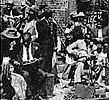
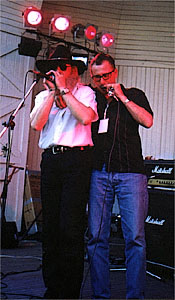

2000 |
июль |
|
Блюз-ру переходит на регулярный график обновлений дважды в неделю: по понедельникам и четвергам.
 ATB's WHO'S WHO:
ATB's WHO'S WHO:
Clarence "Gatemouth" BROWN
Big Bill BROONZY
Ruth BROWN
Mike BLOOMFIELD
Paul BUTTERFIELD
CHESS Records
ALLIGATOR Records
Lil' Ed Williams & the Blues Imperials
Jimmie VAUGHAN
Charlie MUSSELWHITE
Elmore JAMES
Louisiana Red
 |
|
БЛЮЗ У НАС |

|
24 августа. |

|
26 июля. |
 |
13 июля: |